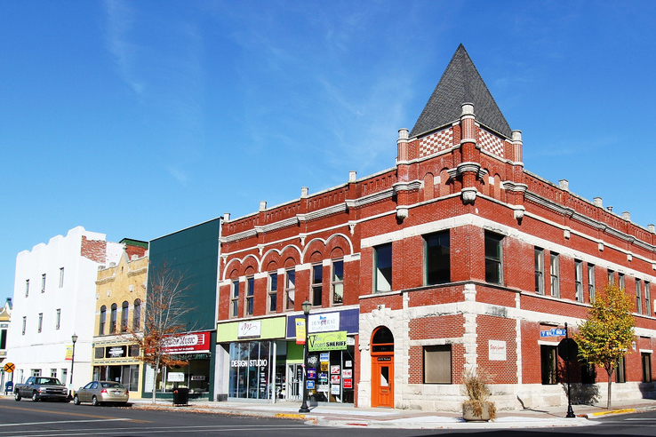
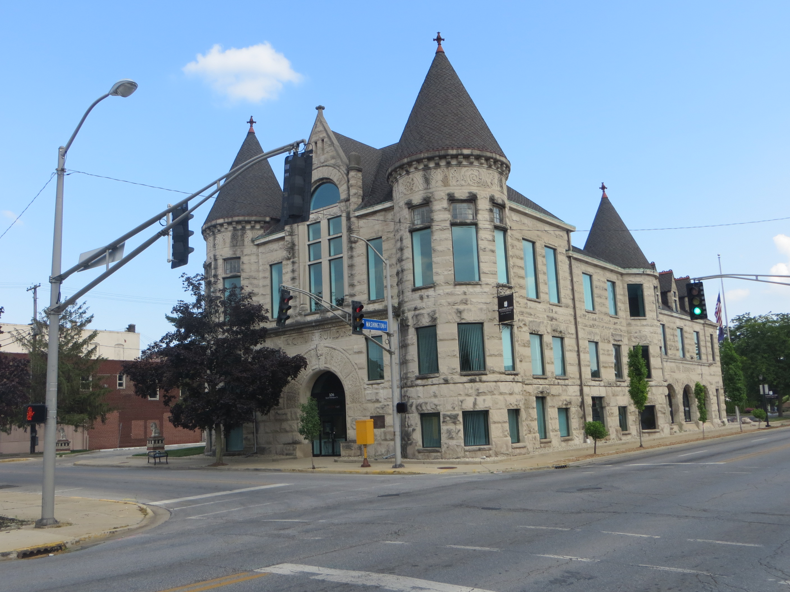

Travle page
My name is Xavier Ruiz, im a senior at plymouth high school. I was born in Kokomo, Indiana. I moved to plymouth in 2004 and lived there ever since. After highschool I plan on getting a job and probably going to collage soon after. I reside in a family of 6 wich consists of my mom, my dad, 2 of my brothers, and my little sister.
 